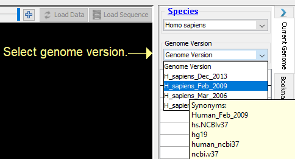
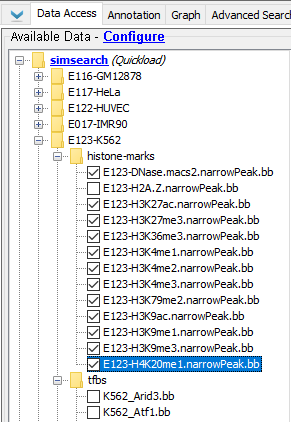
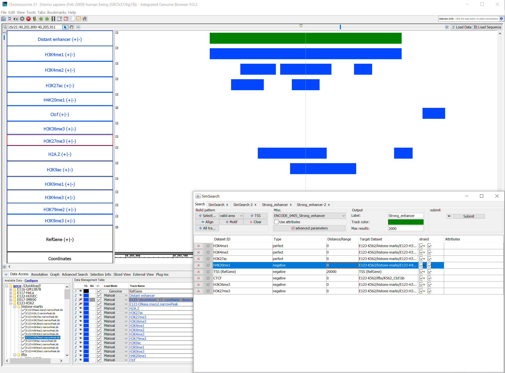
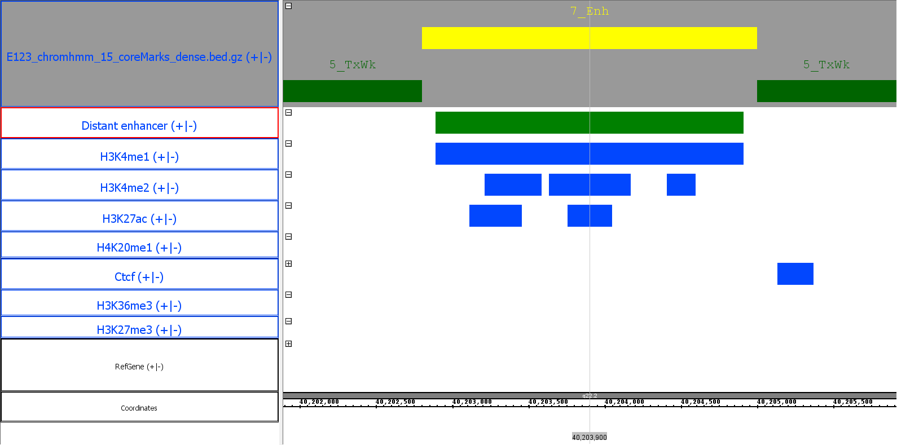

Select the right genome
{kind=link}
The data we will use has been aligned on the human genome build hg19, also called NCBI37, or Feb 2009. We select the species Homo sapiens and the genome version H_sapiens_Feb_2019 in the right panel of IGB.
Load tracks
{kind=link}
We will load in new tracks the results of ChIP-seq experiments from ENCODE that are available from the SimSearch Quickload server. We select this server in the data panel (bottom panel in IGB), and select the Histone Marks available for the K562 cell line, as well as CTCF binding regions under tfbs.
Select the enhancer pattern
{kind=link}
Now we select an Enhancer pattern from the pre-defined pattern list. We choose the pattern named Strong_Enhancer, which is inferred from the results of ChromHMM based on the data from ENCODE.
Add TSS

Because we want a distal enhancer, we will add the TSS dataset, by pressing the TSS button in the "Build pattern" area of the Search tab.
We can edit this dataset: first we specify that we want it to be a negative dataset (we do not want the results to contain a TSS), second we change the distance to 20000, to ensure that the results will be distant at least 20000 bases from a TSS.
Browsing the results
We are now ready to start the pattern search. The processing time depends on the number and complexity of the tracks, as well as the internet connection (you can also use local files or a local Quickload repository).
{kind=link}
The results are displayed in a table. If we click on any row, the plugin will automatically zoom into the corresponding region in the browser, and display on the right the regions associated with each dataset (blue) and how they aligned to the original pattern (red).
Analyzing the results
It is possible to browse the results, inspect them visually in the browser, and also run additional analyzes directly from the plugin.

We choose to compare our results to those of the original ChromHMM annotations. We load the results from ChromHMM from the SimSearch Quickload server, in the annotation section of the K562 section. From the result panel, we select this track and press the "Track annotations" button.

The result table shows, as expected, an enrichment for enhancer regions.
{kind=link}